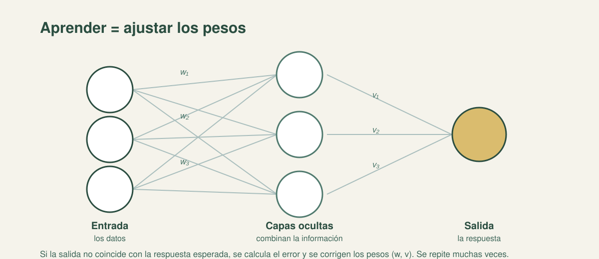

Cómo aprende una red neuronal (y por qué a veces falla)
Al terminar, podrás explicar neuronas, capas, pesos, el ciclo de entrenamiento, el sobreajuste y por qué se separan los datos de entrenamiento, validación y prueba.
Apoyado en Ciencia de datos desde cero (Grus) y en Inteligencia artificial: un enfoque moderno (Russell y Norvig).
Ver referencia →
La idea central
Una red neuronal es un modelo de neuronas organizadas en capas y conectadas por pesos. Aprender es ajustar esos pesos a partir de ejemplos, para reducir el error. Esa es toda la magia: no hay reglas escritas, hay números que se corrigen una y otra vez.

Neuronas, capas y pesos
Neurona artificial: recibe entradas, las pondera y produce una salida.
Capas: entrada (recibe los datos), ocultas (combinan y procesan), salida (entrega el resultado).
Peso: número que indica cuánto importa cada conexión. Aprender es ajustarlos.
El ciclo de entrenamiento
Se presentan ejemplos.
La red produce una salida.
Se compara con lo esperado y se calcula el error con una función de pérdida.
Se corrigen los pesos para reducir ese error.
Se repite: cada pasada completa sobre todos los ejemplos es una época.
Regla de oro: en el preentrenamiento no se "refuerza" nada: se comparan los pesos con la respuesta correcta y se corrigen para reducir el error. El refuerzo es otra cosa: la señal de recompensa del aprendizaje por refuerzo.
Por qué "funciona en la demo y falla en producción"
Si medimos el desempeño con los mismos datos con que el modelo aprendió, siempre parecerá bueno. Por eso los datos se separan en tres grupos:
Grupo
Para qué sirve
Entrenamiento
Los ejemplos con los que el modelo aprende y ajusta sus pesos.
Validación
Un grupo aparte para tomar decisiones durante el desarrollo, sin usarlo para aprender.
Prueba
Un grupo que el modelo nunca vio, para estimar cómo funcionará con casos nuevos.
Cuando el modelo memoriza los ejemplos de entrenamiento en vez de captar el patrón, tenemos sobreajuste: acierta en lo conocido y falla en lo nuevo. Es la causa típica del "en la demo andaba y en producción no".
Métricas: exactitud y precisión
Exactitud: proporción de aciertos sobre el total de casos evaluados.
Precisión: de los casos que el modelo marcó como positivos, cuántos lo eran de verdad.
No son lo mismo. Una exactitud alta con precisión baja (o al revés) obliga a preguntar para qué se usará el modelo: no es lo mismo filtrar unos pocos casos dudosos que decidir sobre un trámite.
Practica: del error al sobreajuste
Elige una opción. Recibirás la corrección al instante.
1. En una red neuronal, aprender consiste en:
Por qué: los pesos son los números ajustables; el aprendizaje los corrige comparando la salida con lo esperado.
2. La función de pérdida mide:
Por qué: la pérdida cuantifica el error y guía el ajuste de los pesos.
3. Una época es:
Por qué: cada vuelta completa sobre los ejemplos de entrenamiento es una época; se repiten muchas.
4. ¿Para qué sirve el conjunto de prueba?
Por qué: es el espejo de la realidad: no se usa para aprender, sino para medir cómo funcionará con casos nuevos.
5. El sobreajuste ocurre cuando el modelo:
Por qué: el sobreajuste acierta en lo conocido y falla en lo nuevo; se detecta con el conjunto de prueba.
6. ¿Cuál es la diferencia entre exactitud y precisión?
Por qué: son métricas distintas; una exactitud alta con precisión baja obliga a preguntar para qué se usará el modelo.
La frase que lo resume
Una red aprende corrigiendo sus pesos para reducir el error. Y por eso mismo hay que medirla con datos que nunca vio: si se la evalúa con lo que ya memorizó, el resultado engaña.
Fuente principal
Para profundizar: Joel Grus, Ciencia de datos desde cero (sobreajuste y métricas) y Russell y Norvig, Inteligencia artificial: un enfoque moderno.
El ciclo de entrenamiento está resumido en la hoja de referencia del bloque.
¿Algo te hace dudar? Pregúntame y lo desarmamos — por ejemplo: "¿por qué no alcanza con medir el acierto en los datos de entrenamiento?" o "¿qué métrica conviene si el error es caro?".